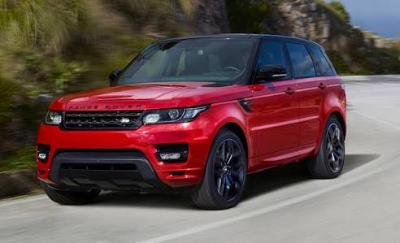
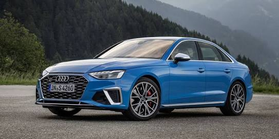
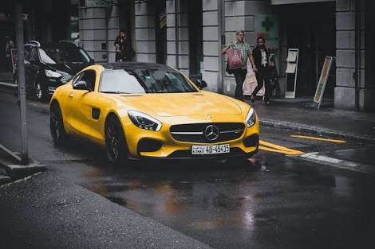

|
ghhhfg LIVE LIKE A BOSSLand Rover Range Rover Sport Review: 2006-2012 Model Year Changes and Differences Land Rover Range Rover Sport Review: 2006-2012 Model Year Changes and Differences March 4, 2020 Car Review Land RoverSUVcar review Land Rover Range Rover Sport The Range Rover Sport takes a sophisticated and versatile approach to the on-road-off-road scene, bringing Land Rover’s off-road vehicles to a whole new level. The Range Rover Sport is the brand’s first foray into the SUV category, and it has made a strong statement on the road. The Sport is the British 4WD manufacturer’s first vehicle with an emphasis on on-road capability while still bearing the brand’s trademark off-road mastery. |
|
ghhhfg CLASSIC FOR CLASSIC PEOPLEThe fourth generation of Mercedes C-Class has had a big facelift, with the whole range – saloon, estate, coupe and convertible – all getting a big update. The C-Class’s biggest yet, we’re told; over 6,500 components are brand new, which is nearly 50 per cent of the whole car. Yet the C-Class’s ethos hasn’t changed one bit, and it remains a slightly classier, comfier car than an equivalent BMW 3 Series. The same applies whichever car you buy, making this one of the more premium estate cars on sale. |
|
ghhhfg JUNGLE BOSSAudi flirted with four-cylinder power for the last generation of its flagship saloon (for the hybrid model). This time around, the lowest available cylinder count is six, rising to eight for the range-topping S8. As an understated luxury limousine, the A8 goes without Audi’s dual-clutch gearbox in favour of a smoother-shifting torque-converter auto, within the casing of which our test subject’s electric motor is housed. There has been talk of this A8 receiving Bentley’s W12, which would take power to around 600bhp, though we’re not holding our breath. |